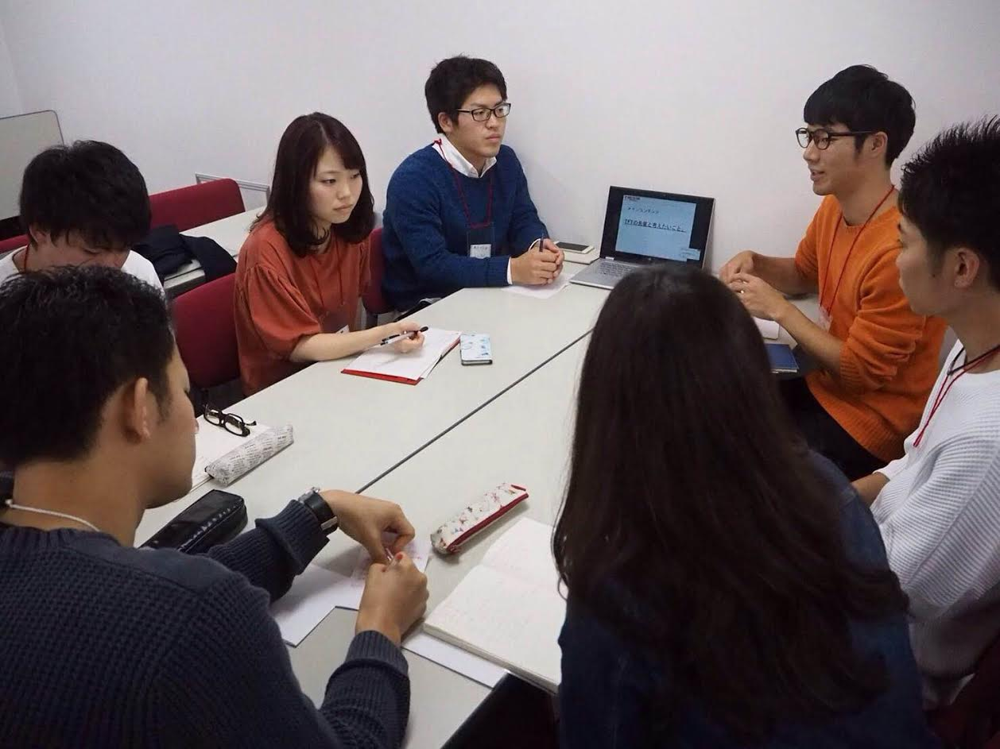
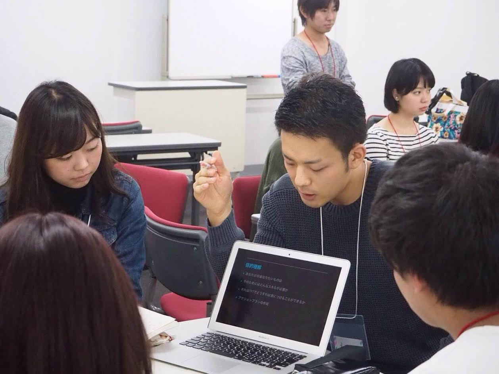
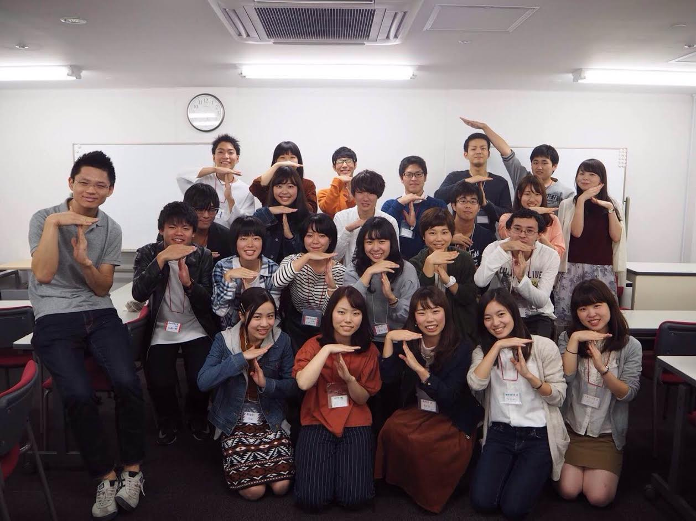

・TFT-UAミーティングに参加しました。
2016年10月23日（日）に渋谷で開催された、TFT-UAミーティングに初めて参加しました。当日は神田外語大学の他に、創価大学や千葉大学など様々な大学が参加しました。
当日はTFTの広報やメンバーのモチベーションについて話し合い、各グループで意見を交換し合いました。それぞれの大学がどのように活動しているのかを直接聞き、改めてTFTについて考えることが出来た、非常に有意義な時間となりました。
 
